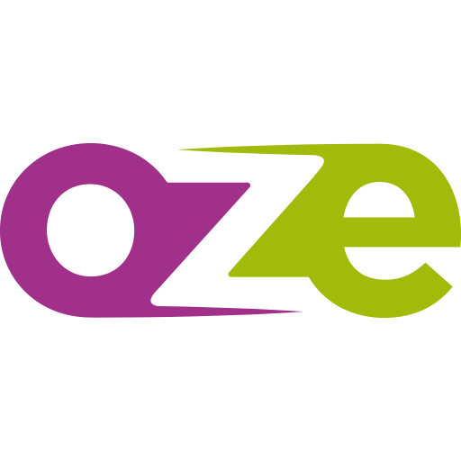

Collège
Jean Vilar
01 30 22 49 30
45 rue Paul Eluard,
Les Mureaux
Les liens utiles
 Pronote
Pronote
 L'ENT
E-sidoc
Bienvenu sur le nouveau site du collège !
À la une
Nouveautés au CDI !
7 Sepyembre 2019
Des nombreux nouveaux livres sont disponibles au CDI sur la table de présentation. Ils sont empruntables dès à présent.
Mini-stages découverte
30 Sepyembre 2019
Plusieurs établissements proposent aux élèves de 3ème de venir découvrir leurs filières au cours d’un mini-stage. Si vous êtes intéressés, demander des renseignements supplémentaires auprès du professeur principal, de votre CPE, de Monsieur Piveteau ou sur les sites internet des établissements.
Votez pour les créations musicales des élèves de 5ème
1 Sepyembre 2019
En cours de musique, les élèves de Monsieur Fortuné ont réalisé des enregistrements. Ce travail était basé sur l’utilisation de la répétition comme moyen de création. Les élèves ont voté pour les deux meilleurs musiques dans chaque classe. A votre tour de voter !